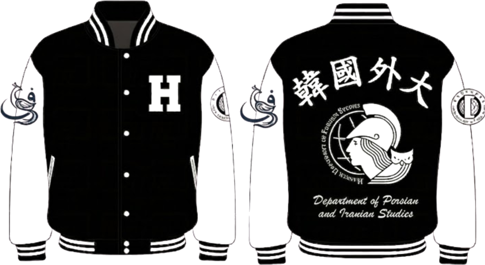
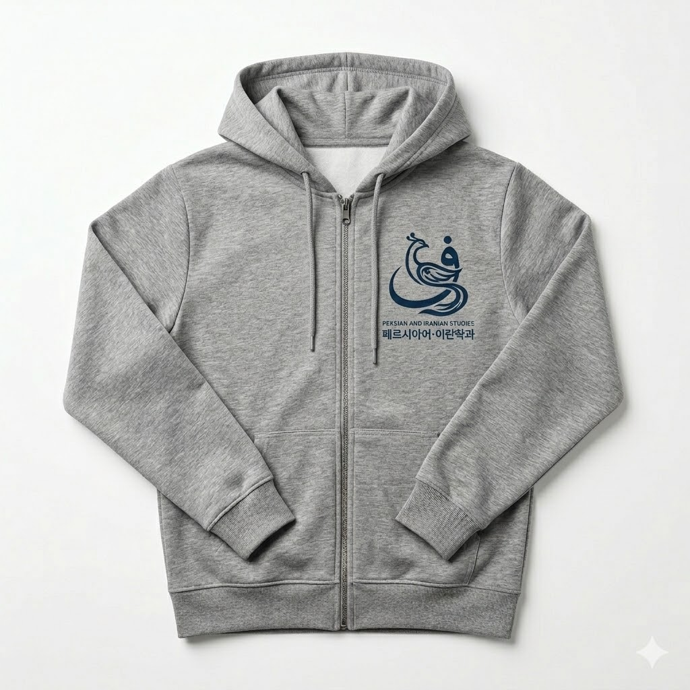

페르시아어 · 이란학과
Department of Persian Language & Iranian Studies
한국외국어대학교 — SINCE 1976 — 50TH ANNIVERSARY
Department of Persian Language & Iranian Studies
한국외국어대학교 — SINCE 1976 — 50TH ANNIVERSARY
01 — Logo Lockup
PERSIAN AND IRANIAN STUDIES
페르시아어·이란학과
— EST. 1976 —
HANKUK UNIVERSITY OF FOREIGN STUDIES
PERSIAN AND IRANIAN STUDIES
페르시아어·이란학과
— EST. 1976 —
HANKUK UNIVERSITY OF FOREIGN STUDIES
02 — Design Concept
페르시아어의 첫 글자 ف(파)의 캘리그래피 곡선이 이란 신화 속 지혜의 새 시무르그의 형상이 됩니다. 글자를 보면 새가 보이고, 새를 보면 글자가 보입니다.
فارسی(Farsi)의 첫 글자. 모든 학생이 처음 배우는 문자이자 여정의 출발점.
페르시아 신화에서 지혜·치유·풍요를 상징하는 전설의 새. 자아 발견의 메타포.
글자와 새가 분리되지 않는 통합 구성. 언어를 배우면 그 문화 안에 들어가게 됩니다.
30마리 새(سی مرغ)가 시무르그를 찾아 떠나지만, 발견한 건 자기 자신이었습니다.
03 — Goods Application




04 — Storytelling
— 송일현
1. 전공의 선택: 언어라는 새로운 세계로의 탐험
지리와 언어를 사랑하던 제게 아랍어는 낯설지만 매혹적인 세계였습니다. 생소한 문자를 익히는 즐거움은 자연스럽게 중동의 중심인 이란으로 이어졌습니다. 풍부한 자원과 인구, 그리고 제재 이후 열릴 무궁무진한 가능성을 보며 저는 페르시아어·이란학과를 선택했습니다.
전공을 공부하며 마주한 페르시아어는 기대 이상이었습니다. 한국어와 유사한 어순은 학습의 재미를 더했고, '이란 뉴스 읽기'와 '페르시아 문학개론' 수업을 통해 그들의 깊은 역사와 문화를 직접 체감할 수 있었습니다. 주변의 질문에 전공자로서 답하며 얻은 자신감은 이 학과에 대한 깊은 소속감으로 이어졌습니다.
2. 디자인 컨셉: 글자에서 피어난 지혜의 형상
이번 로고는 이러한 저의 경험과 학과의 철학을 결합한 결과물입니다. 페르시아어의 첫 글자인 'ف(fe)'의 유려한 곡선을 활용하여 이란 신화 속 지혜의 영물, '시무르그'를 형상화했습니다. 글자를 응시하면 새가 보이고, 새의 날갯짓을 따라가면 다시 글자가 읽히는 구조를 통해 언어와 문화가 하나임을 표현했습니다.
12세기 시인 아타르의 「새들의 회의」에서 서른 마리의 새가 고난 끝에 마주한 진정한 왕이 결국 '자기 자신'이었듯이, 이 로고는 우리 학문적 여정의 목적지를 상징합니다.
3. 향후 50년의 이정표
1976년 창설 이래 50년간 수많은 선배님이 이곳에서 각자의 이란을 발견해왔습니다. 이 로고가 과잠이나 에코백에 새겨져 누군가에게 "이게 무엇인지" 질문을 받는 순간, 그것은 곧 낯선 세계로 향하는 새로운 입구가 될 것입니다. 이 디자인이 지난 50년의 긍지를 잇고, 앞으로의 50년을 밝히는 작은 이정표가 되기를 희망합니다.